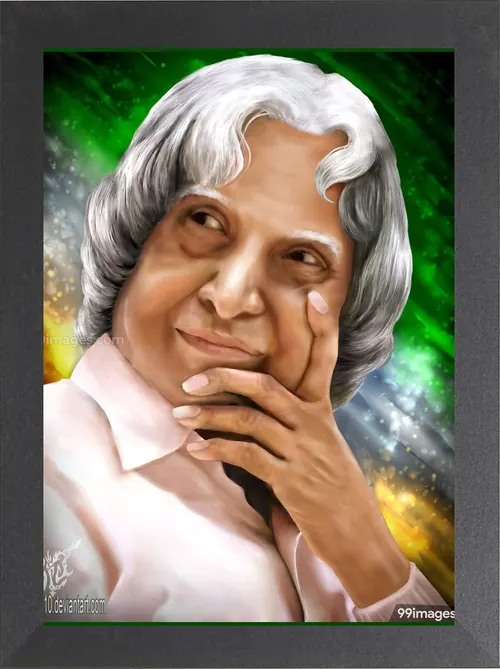

The People's President and the Missile Man of India

Dr. A. P. J. Abdul Kalam was an Indian aerospace scientist, author and the 11th President of India.
Avul Pakir Jainulabdeen Abdul Kalam was born on 15 October 1931 in Rameswaram, Tamil Nadu. He came from a modest family and developed a strong interest in science and technology during his early years. His determination and dedication helped him pursue higher education in aeronautical engineering.
Kalam worked with India's Defence Research and Development Organisation and the Indian Space Research Organisation. He played an important role in India's space and missile development programmes and became closely associated with several important national technology projects.
His contributions to India's missile development programmes earned him the popular title "Missile Man of India". He also worked as a scientific adviser and contributed to India's strategic technology development.
In 2002, Kalam became the 11th President of India. He was widely admired for his simple lifestyle, interaction with students and commitment to encouraging young people to pursue education, science and innovation. He continued teaching and inspiring students even after completing his presidential term.
Born on 15 October in Rameswaram, Tamil Nadu.
Began his professional career in India's space and defence research programmes.
Worked with the SLV-III programme that successfully placed the Rohini satellite into near-Earth orbit.
Played an important role in India's missile and strategic technology programmes.
Became the 11th President of India.
Passed away on 27 July while delivering a lecture at IIM Shillong.
"Dream, dream, dream. Dreams transform into thoughts and thoughts result in action."
— Dr. A. P. J. Abdul Kalam